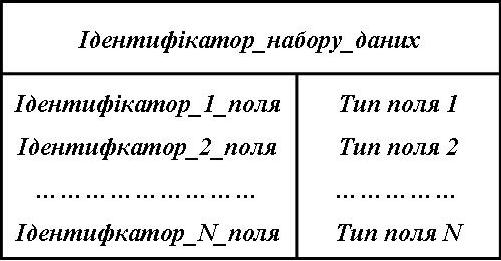
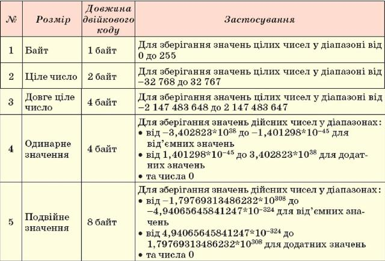
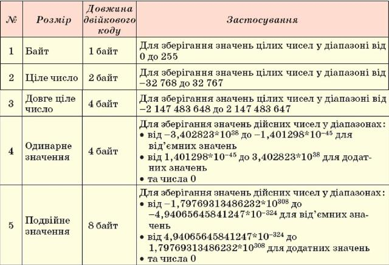
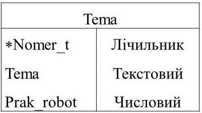
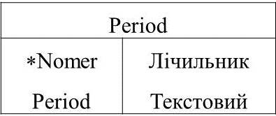
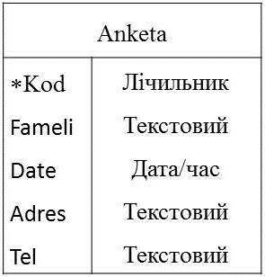
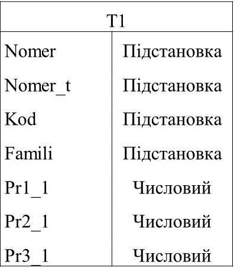

На початку проектування баз даних, як правило, розробляється модель предметної області, для якої створюється ця БД. У ній вказують типи об’єктів, що будуть включені до бази даних, і зв’язки між ними. Для наочності таку модель можна подати у графічному вигляді.
Розглянемо приклад бази даних предметної області "Школа", але обмежимося тільки деякими об'єктами, що стосуються уроків інформатики: учні, період навчання, теми, що вивчаються і практичні роботи, які виконують при вивченні тем.
У прямокутниках записані назви об’єктів предметної області, стрілки вказують на зв’язки між ними, а написи біля стрілок описують ці зв’язки.
При подальшій формалізації моделі словесний опис зв’язків між сутностями замінюють на їх умовні позначення відповідного типу
Тип об’єкта предметної області називають сутністю. Сутностями розглянутої вище предметної області є Учень, Тема, Період, Практичні роботи.
Сутності є сукупностями однотипних об’єктів. Наприклад, сутність Тема складається з об’єктів номер теми, назва теми.
Окремі об’єкти сутності називають екземплярами сутності. Сутність має як мінімум один екземпляр. Наприклад, сутність Учень має тільки один екземпляр сутності, якщо вказується тільки його прізвище.
.jpg)
За множинністю виділяють такі типи зв’язків:
один до одного (позначається як 1:1), коли одному екземпляру однієї сутності відповідає один екземпляр іншої сутності.
один до багатьох (позначається як 1:∞), коли одному екземпляру однієї сутності може відповідати кілька екземплярів іншої сутності.
багато до одного (позначається як ∞:1 або М:1), коли кільком екземплярам однієї сутності відповідає один екземпляр іншої сутності. Цей тип зв’язку є протилежним до зв’язку один до багатьох.
багато до багатьох (позначається як ∞:∞ або М:М), коли кільком екземплярам однієї сутності можуть відповідати кілька екземплярів іншої сутності.
.jpg)
Створення баз даних передбачає такі етапи:
1. Необхідно базу даних спроектувати на папері, виконавши наступні дії:
1.1. Визначити мету створення БД (яка інформація буде зберігатися, для чого призначається);
1.2. Визначити набори даних, що входять у БД;
1.3. Задати компоненти кожного набору даних (склад полів, типи даних, властивості полів);
1.4. Визначити зв’язки між наборами даних і задати компонент для однозначного вибору потрібного
запису.
2. Створення структури бази даних з використанням однієї із систем керування базами даних або
однієї з мов програмування.
3. Введення даних.
4. Тестування бази даних, її корекція.
У реляційній БД не повинно бути наборів даних які мали б надлишкову інформацію, що повторюються (це буде приводити до різних аномалій, що перешкоджають встановлювати зв’язки між наборами даних. При проектуванні БД набори даних прийнято записувати у вигляді таблиці
Поле характеризується: ідентифікатором, типом, розміром, які необхідно вказувати при створенні структури БД.
Ідентифікатором поля може служити до 64 символів: букви і цифри. Не можна використовувати крапку, логічні оператори, розділові знаки, дужки, пробіли.

В одному полі бази даних можуть зберігатися дані тільки одного типу.
Властивість Розмір поля обумовлює максимальну кількість знаків, які можна ввести в поле.
Для зберігання даних певного типу у пам’яті комп’ютера використовується різна довжина двійкового коду. Так, для зберігання даних логічного типу потрібен всього 1 біт пам’яті, а для текстових даних – до 256 байт (або до 512 байт при використанні Unicode). Чим менше обсяг даних, тим швидше відбувається опрацювання даних. Тому під час проектування баз даних намагаються мінімізувати обсяги даних за рахунок раціонального використання даних різних типів.
Розглянемо розміри числового типу даних:
 

В кожному семестрі вивчається декілька тем (обмежемось двома), тому треба мати ще один набір даних Tema, який би містив інформацію про теми, що вивчаються протягом року (Tema), а також інформацію про кількість виконуємих робіт в кожній темі (Prak_robot). І знову виходячи з міркувань індексації записів введемо додаткове поле Nomer_t, яке й буде ключовим.
Другий набір даних – це інформація про періоди навчання. Ідентифікатором цього набору даних буде Period.
Значить кожен запис складатиметься з компонентів: номера періоду і відповідний йому період навчання. Тип поля Nomer буде лічильник, а для поля Period – текстовий.
Необхідно мати інформацію анкетних даних про кожного учня. Це набір даних – Anketa. Для того, щоб задати кожен запис однозначно потрібно ввести додаткове поле, дані якого не повторювались, тобто індексувати кожен запис. Нехай таке поле матиме ідентифікатор Kod. Тип даних такого поля встановимо лічильник. Кожний запис складається з компонентів: код учня (Kod), прізвище та ім’я (Fameli), дати народження (Date), місця проживання (Adres), домашнього телефону (Tel).
Задача
Створити базу даних для автоматизації роботи вчителя інформатики. В ній повинні зберігатися відомості про учнів (обмежемся одним класом) та їх оцінки по практичним роботам з кожної теми. Тематичні оцінки підраховуються на основі оцінок за практичні роботи по кожній темі окремо. Семестрові виставляються з урахуванням тематичних, а річні - на основі отриманих семестрових оцінок.
Необхідно створити набори даних для введення оцінок за практичні роботи в чотирьох темах: T1, T2, T3, T4. Кожен запис складатиметься з компонентів: Nomer , Nomer_t, Kod, Fameli. Для автоматизації введення даних з інших таблиць у вказаних полях використовують майстер підстановок. Значеннями полів Pr1_1, Pr2_1, Pr3_1 будуть оцінки учнів, отримані за практичні роботи, тому вказується тип даних числовий і байтовий.



